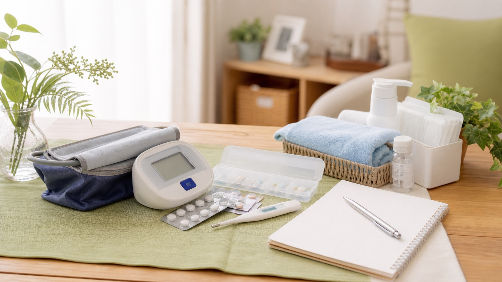

健康状態の観察
血圧・体温・脈拍・酸素飽和度をはじめ、食事量・睡眠・排便・皮膚の状態などを毎回の訪問で確認し、体調の変化を早めに把握します。「最近少し元気がないかも」といった小さな変化も、主治医やケアマネジャーと共有し、必要な支援につなげます。
サービス内容
看護師がご自宅へ伺い、その方の状態とご希望に合わせたケアを行います。
「これはお願いできるのかな？」と迷ったら、お気軽にご相談ください。

血圧・体温・脈拍・酸素飽和度をはじめ、食事量・睡眠・排便・皮膚の状態などを毎回の訪問で確認し、体調の変化を早めに把握します。「最近少し元気がないかも」といった小さな変化も、主治医やケアマネジャーと共有し、必要な支援につなげます。
主治医の指示にもとづき、点滴、カテーテル管理、褥瘡（じょくそう）ケア、ストーマケア、在宅酸素、インスリン管理、創傷処置などに対応します。実際の対応内容は、主治医の指示やご本人の状態によって異なりますので、まずはご相談ください。
お薬の飲み忘れや飲み間違い、残薬の確認を行い、ご本人が無理なく続けられる方法を一緒に整えます。お薬カレンダーの活用などの工夫も取り入れながら、必要に応じて薬局や主治医とも情報を共有します。
介護方法の相談、体位交換、移動の介助、清潔ケア、食事や排泄に関する不安など、ご家族が抱えやすいお悩みにも寄り添います。ご家族だけで抱え込まないよう、いつでも相談しやすい関係づくりを大切にしています。
からだの状態に合わせた運動や歩行の練習、日常生活動作の確認、転倒予防、福祉用具のご相談などを行います。「できること」を少しずつ続けられるよう、その方の生活に合わせた支援を行います。
「食事はどんなものがいいの？」「お風呂に入っても大丈夫？」など、ご自宅での療養にまつわる疑問や不安に、看護師の立場からお答えします。暮らしの中の小さな「困った」を、ひとつずつ一緒に解決していきます。
住み慣れた場所で過ごしたいという思いに寄り添い、主治医や関係機関と連携しながら、症状の観察、ご本人の苦痛への配慮、ご家族の不安への支援を行います。ご本人とご家族が、その方らしい時間を過ごせるよう静かにお支えします。
主治医、ケアマネジャー、薬局、訪問介護、デイサービス、病院、地域包括支援センターなどと情報を共有し、チームでご本人とご家族を支えます。「誰に相談すればいいかわからない」ときは、私たちが窓口となって調整します。
対応できる医療ケア例
※実際に対応できる内容は、主治医の指示やご本人の状態によって異なります。まずはお気軽にご相談ください。
緊急時・夜間のご相談
状態の変化や急なご不安があるときに備え、ご連絡をいただける体制を整えています。夜間や休日の対応内容は、ご契約内容やご本人の状態によって異なります。
急な症状や命に関わる状態が疑われる場合は、救急要請や主治医への連絡が必要となることもあります。具体的な連絡方法や対応の流れは、利用開始時にわかりやすくご説明しますので、ご安心ください。
ご利用にあたって
訪問看護は、介護保険または医療保険を使ってご利用いただけます。どちらの保険になるかは、年齢や病気の種類によって決まりますが、むずかしい手続きや判断は私たちがご案内しますのでご安心ください。
費用のめやすや回数についても、ご相談の際にわかりやすくご説明します。